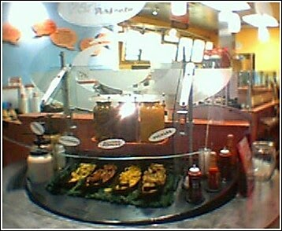
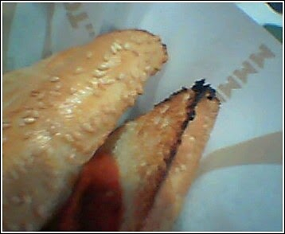

Recovered weblog entry
Quizno's
So they weren't lying, after all. Their subs are A. Toasty B. Tasty and C. They do have a pepper bar. But it wasn't the pepper bar that I had expected. For some strange reason, I believed that they had all sorts of exotic "shaking" peppers that you could use on your subs. And well, since my wife has gotten me into really nice pepper, I was sort of excited. Fine, I wasn't disappointed, I just now stand corrected.

Yes, they have a pepper bar.

The proof is in the pudding. Well, in the bread, at any rate...
I promise that this is my final entry regarding Quiznos. And hey, we all got a laugh, I'm sure. I suppose that it's only fitting that this strange adventure ends in the culmination of the visit to the restaurant. Side note: My wife thought that the place was cute. It was, but it wasn't wholly original. I'd seen cuter.
On to bigger and better things. Let's see...this weekend, there are many things afoot. The buddies and I are planning on taking another camping trip to Camp Verde, perchance (sorry, James Lileks) we'll visit the hot springs this time around. I think i'll be braver this time and take the camera along for the adventure, as I saw many picture-worthy jewels in the wilderness that day. One could spend an entire day shooting the mountains in that region.
Shortly after we return from the camping trip, it's all business from thereon out. I have to meet with a company regarding a possible Web site design. That should be interesting, and quite a positive experience if I may be so bold.
Sunday is slated for nothing but church and relaxation. Monday? Number 25 for this chap. I haven't a clue what to do for that day, but maybe my wife will make more choco-crisps for me. That's an entirely different topic for another day, keep in mind. I'll be sure to elucidate further next week. See you on Friday. To remind myself, it'll be something about The Passion.
Keep em coming.